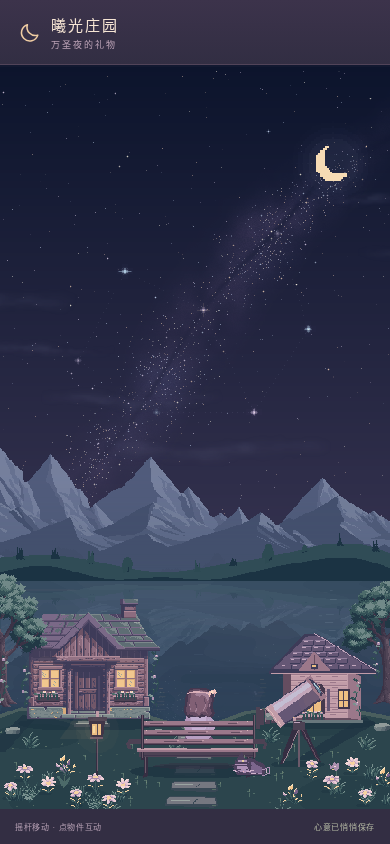
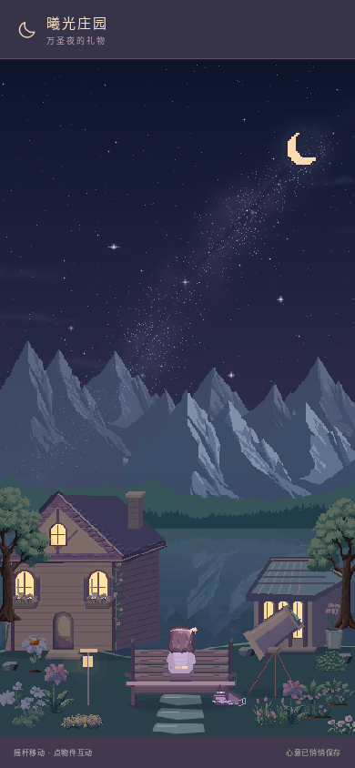

同一座庄园，新的风景。
湖畔、晚风花海、糖果工坊与小曦的小屋，换上新的主体素材、植物群落和制作界面。14组画面全部来自真实运行的游戏，你可以直接拖动比较。
独立分支交付，正式main未覆盖。预览不需要登录。预览与正式站的进度各自保存在当前浏览器域名下。进入游戏后，可用「在庄园里漫游」选择场景，用回忆册切换时段。


V4 · 本轮开始前V5 · 本轮完成后390×844 · 相同机位与可比旧档状态 · 无修图或概念图
四个可以亲自走进去的场景。
静态对比使用减少动态，关闭自动演出和极光，隐藏同样的HUD，让主体画面本身接受检验。完整游戏继续有风、昼夜、极光、三套星雨、七类烟花和自动演出，保留搅拌、收火、包装、换装、布置、采花、拍照与存档。
资源与交付资料
92帧本地PNG图集，约263KiB；另有4张本地山景／森林纹理。15张花卉／灌木／盆栽和2张森林源图来自karsiori，逐项核实CC0，已经统一色阶。主要建筑、家具、工坊和物品为本轮离线原创像素绘图。没有付费图片API或运行时图片外链。